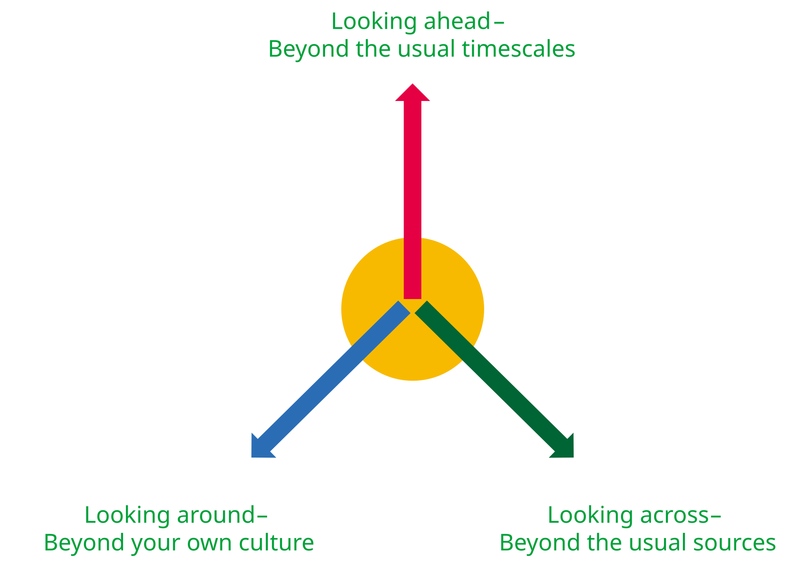
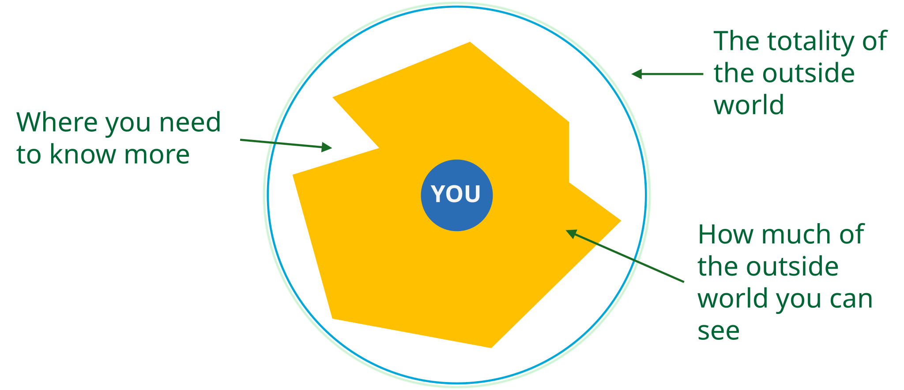

Escaneo del horizonte
Futures Toolkit (GO-Science, 2024). Traducción no oficial al español
El escaneo del horizonte (horizon scanning) es la recopilación sistemática de percepciones sobre tendencias emergentes y señales débiles de cambio, para identificar posibles amenazas, riesgos y oportunidades.
Úsela para…
- Recoger información sobre tendencias y desarrollos emergentes que podrían tener un impacto en un área de política o de estrategia en el futuro.
- Informar la reflexión sobre el impacto consiguiente en las estrategias u opciones de política.
- Aumentar el conocimiento y la comprensión de las personas de su organización sobre el entorno de políticas cambiante.
- Construir una base de evidencia sólida para destacar las áreas donde puede ser necesario cambiar estrategias y políticas.
Obtendrá…
- Un informe que destaca tendencias y posibles desarrollos que afectarán el entorno futuro de operación de la organización o de un área de política.
- Una mejor comprensión de los cambios pertinentes que ocurren en el mundo exterior.
- Una comprensión de cómo podrían tener que cambiar la estrategia o las políticas en respuesta.
Tenga cuidado con…
- Pasar por alto cambios importantes si no ha escaneado con suficiente amplitud.
- Los temas planteados pueden tener consecuencias sensibles que deben manejarse con cuidado.
A quién involucrar
Lo ideal es que su grupo de escaneo tenga personas de trayectorias diversas, y podría incluir personas de fuera de su organización, aunque esto se adapta a sus recursos.
Número de participantes
Unas 2 o 3 personas en el equipo del proyecto para organizar el escaneo (aunque puede hacerlo una sola persona), con cualquier número de escaneadores adicionales.
Tiempo que toma
El escaneo puede hacerse durante varias semanas o como una actividad continua. Para elaborar el informe, sugerimos un taller de medio día seguido de tiempo para redactar.
Cómo incluir más perspectivas
- Amplíe la red de colaboradores (“escaneadores”) para incluir a más personas que puedan aportar perspectivas distintas.
- Amplíe la participación en el taller de escaneo y haga circular pronto y ampliamente los temas emergentes para recibir comentarios.
El enfoque
El escaneo del horizonte puede hacerse durante un periodo definido para informar un proyecto específico, o puede ser una función continua para informar la estrategia de una organización y sus prioridades de trabajo. No requiere necesariamente un equipo dedicado; puede ser parte del trabajo de las personas ingresar en la base de datos los desarrollos interesantes cuando surjan, o con frecuencia.
Hay muchos enfoques posibles, y el que se presenta a continuación puede adaptarse según el tiempo y los recursos de que disponga. Sugerimos formas de crear recomendaciones accionables a partir del escaneo (paso 5 y siguientes pasos), pero puede hacerlo de otra manera. La clave es planificar con anticipación cómo usará las percepciones que recoja para informar un área más amplia de política o de estrategia, de modo que el proceso de escaneo tenga impacto.
Debe tener una pregunta de alcance claramente definida al empezar el escaneo del horizonte: es un ejercicio absorbente y atractivo, ¡y es fácil desviarse y perderse por las ramas!

Un ejercicio completo de escaneo del horizonte puede organizarse en cinco pasos:
Paso 1. Reclutar el grupo de escaneo.
Paso 2. Identificar las fuentes.
Paso 3. Recoger los datos del escaneo y guardarlos en una estructura organizada.
Paso 4. Analizar los escaneos.
Paso 5. Redactar los resultados.
Las personas o equipos pequeños encargados del escaneo del horizonte deberían concentrarse en los pasos 2, 3 y 5, y omitir el taller.
Paso 1: Reclute el grupo de escaneo
Puede involucrar a tantas personas como quiera. Empiece con no más de 10 personas; puede ampliar la red más adelante si el tiempo lo permite. Procure una diversidad suficiente de escaneadores para obtener perspectivas distintas.
Paso 2: Identifique las fuentes
Pida al equipo que identifique fuentes que probablemente sean buenos lugares para buscar señales de cambio emergente.
Busca información más allá de los parámetros habituales de la organización. Uno de los objetivos es identificar las áreas en las que necesita saber más.

Entre las fuentes posibles están:
- Los resultados de otros escaneos publicados (“escaneo de escaneos”) o recopilaciones de tendencias, incluidas las del Gobierno (por ejemplo, el Trend Deck de GO-Science).
- Búsquedas dirigidas en la web o en la literatura académica (por ejemplo, una búsqueda en la web sobre el tema del estudio de futuros y “2040”).
- Consultas y entrevistas a expertos en la materia y a otras personas con una perspectiva externa, quizás con el método de las Siete preguntas.
- Revistas profesionales y de la industria pertinentes.
- Titulares de periódicos, revistas y publicaciones de todo el mundo.
- Blogs y publicaciones en redes sociales de comentaristas e investigadores destacados.
También puede ser útil buscar en las redes sociales temas emergentes que aún no han llegado a la corriente principal.
Cuando sea posible, intente también acceder a fuentes que no estén en inglés. Varios periódicos en otros idiomas tienen cuentas en inglés en las redes sociales. Seguir en las redes sociales a científicos de otros países puede ayudarle a captar literatura que no está en inglés, ya que con frecuencia resumen sus comentarios en inglés para ampliar su alcance.
Paso 3: Recoja los datos del escaneo y guárdelos en una estructura organizada
Si tiene un equipo de escaneadores, debe darles algunas orientaciones para que sus escaneos sigan un enfoque común y tengan un formato coherente (hay ejemplos en el Banco de recursos). Esto incluirá los “metadatos” que considere importantes, como la fecha, el autor, el enlace a la fuente, la categoría PESTLE y una evaluación inicial de plazos e importancia.
Pida a cada escaneador que elabore cada semana un artículo breve (normalmente de una página), o “escaneo”, que describa:
- de qué trata el escaneo;
- cómo se relaciona con el área de política o de estrategia;
- por qué el lector cree que es importante y qué reflexiones le suscitó.
Es un proceso productivo y estimulante: 10 autores que elaboren cada uno un escaneo por semana producirán 60 escaneos (o más) en 6 semanas, que cubrirán un amplio abanico de desarrollos y percepciones novedosos y estimulantes. El equipo del proyecto será responsable de reunir y organizar los escaneos.
Consejos
- Consulte el material de la fuente original para evitar interpretaciones posiblemente sesgadas de la investigación.
- Incluya enlaces al material de la fuente original y a cualquier otro artículo pertinente o interesante que encuentre.
- Lleve la cuenta de cuántos escaneos hay en cada categoría PESTLE para asegurarse de no concentrarse demasiado en un aspecto, como la tecnología.
- Cada vez se desarrollan más herramientas nuevas, como los sistemas de inteligencia artificial, que pueden ayudar en el escaneo del horizonte reuniendo la información básica que luego puede estructurarse.
El escaneo del horizonte es relativamente sencillo, pero depende en parte de la intuición y la perspicacia. Los escaneadores deberían inclinarse por incluir ideas aunque al principio parezcan irrelevantes.
Los escaneos pueden organizarse con el marco PESTLE (vea Mapeo de impulsores), pero a menudo es más interesante agruparlos por temas que surgen de los propios escaneos (lo que se conoce como “agenda natural”).
Paso 4: Analice sus escaneos
Tanto si usa el escaneo del horizonte para informar un proyecto específico como si es una actividad permanente con actualizaciones regulares, tendrá que analizar sus escaneos para extraer percepciones. Sugerimos hacerlo en un taller (apoyándose en algunas de las otras herramientas de esta caja), pero es opcional: lo clave es usar un enfoque riguroso para extraer los hallazgos principales.
Taller: ¿Qué está cambiando?
Reúna al equipo de escaneo, quizás con otras personas, para revisar los escaneos hechos hasta el momento.
- Identifique las señales de cambio: tendencias establecidas, desarrollos esperados, temas que surgen de nuevo, riesgos y oportunidades nuevos y posibles acontecimientos futuros.
- Ubique cada uno en una matriz de probabilidad e impacto.
Matriz de probabilidad e impacto:
| Alto impacto, baja probabilidad | Alto impacto, alta probabilidad |
| Riesgos medios a bajos. Alto riesgo reputacional por un acontecimiento de alto impacto y baja probabilidad | Riesgo alto. Vital para la planificación |
| Bajo impacto, baja probabilidad | Bajo impacto, alta probabilidad |
| Riesgo bajo. Sin prioridad para la planificación | Riesgos medios a bajos. Deberían ser acontecimientos gestionados |
- Podría hacer un ejercicio de Ruedas del futuro para explorar cuáles podrían ser todos los impactos de un cambio.
- Caracterice cada impulsor de cambio emergente según qué tan nuevo es para la organización. ¿Ya se entiende bien? ¿Lo entienden todos? ¿Las estrategias o políticas actuales ya tienen plenamente en cuenta esta tendencia emergente?
- Seleccione quizás de cuatro a ocho impulsores para incluirlos en el informe de escaneo del horizonte. Los del cuadrante de riesgo alto son los más importantes de incluir, pero también querrá cubrir los impulsores de baja probabilidad y alto impacto.
Si realiza el escaneo del horizonte como un proceso permanente, puede usar el producto de este taller para afinar y enfocar su escaneo.
Paso 5: Redacte los resultados
Reúna las conclusiones de su análisis del escaneo y de los talleres en un resumen único y claro.
El resumen del escaneo del horizonte podría incluir:
- Un resumen de las principales tendencias, de los impactos identificados y de cualquier recomendación de acción.
- Los nuevos impulsores de cambio que afectarán a la organización o al área de política y que justifican una acción de su departamento u organización.
- Cambios que pueden tener un alto impacto, pero que necesitan más investigación.
- Tendencias establecidas: aunque no sean nuevas, podrían incluirse para que el panorama sea completo. Si el documento es parte de un proceso de escaneo permanente, aquí podrían documentarse los nuevos desarrollos de temas planteados antes.
Siguientes pasos
El producto puede usarse para informar el Mapeo de impulsores, la Construcción de visión, el Análisis FODA o las Pruebas de estrés de políticas.
¿Necesita ahorrar tiempo?
Un “escaneo de escaneos” por sí solo le dará un buen insumo, pero inevitablemente estará desactualizado. Sumar más personas a su equipo y dividir claramente las responsabilidades acortará el proceso.
Enfoques alternativos
- Un solo escaneador dedicado o un equipo pequeño pueden armar una base de datos de escaneo del horizonte. Para evitar el riesgo de una perspectiva estrecha, tendrían que cuidar especialmente de consultar ampliamente y de incluir un espectro amplio de temas.
- En lugar de artículos de una página, los elementos de la base de datos de escaneo pueden ser registros estructurados como el ejemplo que aparece en el Banco de recursos.
- Puede usar un sistema de base de datos para recopilar y guardar los escaneos. Existe software para reunir enlaces, páginas web, artículos y registros estructurados en una base de datos de escaneo del horizonte.
- Un ejercicio Delphi puede ser un atajo útil para recoger rápidamente percepciones de un abanico de personas.
- Para un enfoque más profundo, podría considerar la idea de que distintas “capas de la civilización” se mueven a velocidades distintas (“capas de ritmo” o Pace Layers): en este modelo, además de clasificar el cambio, se evalúan la profundidad y la naturaleza de su impacto.
Estudio de caso
El International Civil Society Centre (ICS Centre), un organismo de la ONU, lanzó la comunidad “Scanning the Horizon”. Es una plataforma colaborativa de escaneo del horizonte y de análisis de tendencias emergentes que incluye organizaciones de la sociedad civil internacionales y nacionales, futuristas y estrategas. Comparte percepciones, explora tendencias clave y desarrolla estrategias pertinentes de manera continua.
La comunidad ofrece un espacio seguro para el escaneo del horizonte colaborativo y permanente, el apoyo mutuo y el aprendizaje compartido. La plataforma ha permitido el aprendizaje mutuo y el apoyo entre pares entre los miembros del ICSC. Su boletín periódico reúne recursos útiles para compartir.
Los recursos para esta herramienta están en el Banco de recursos.
Los estudios de caso están en el Banco de estudios de caso.